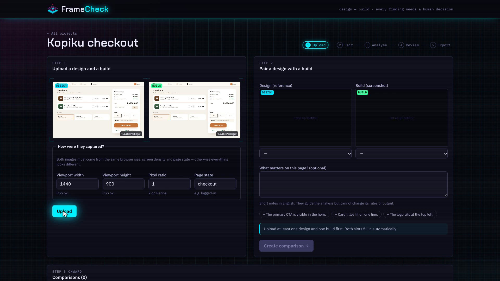
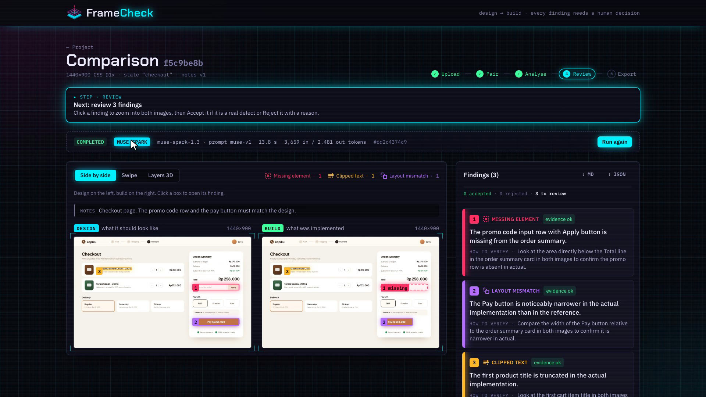
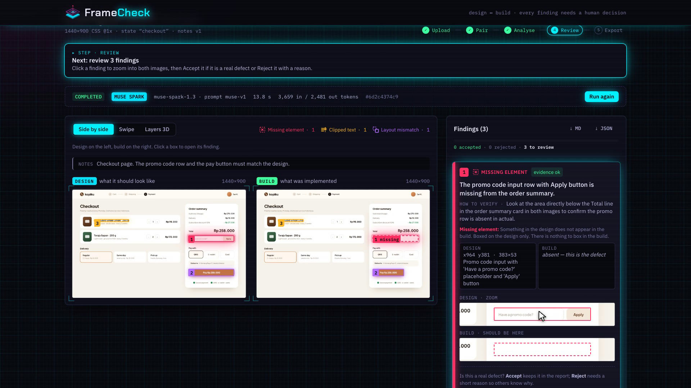
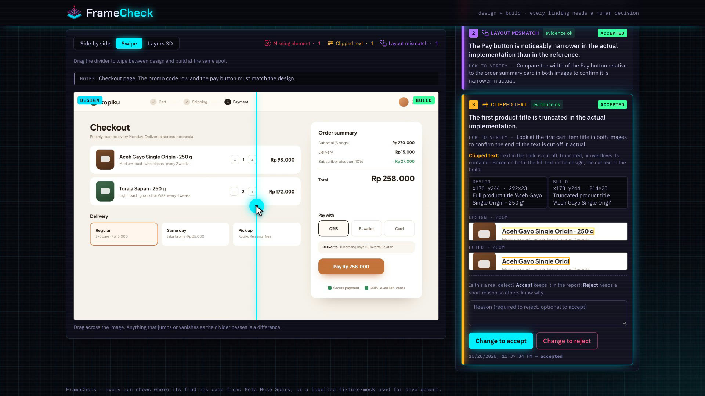
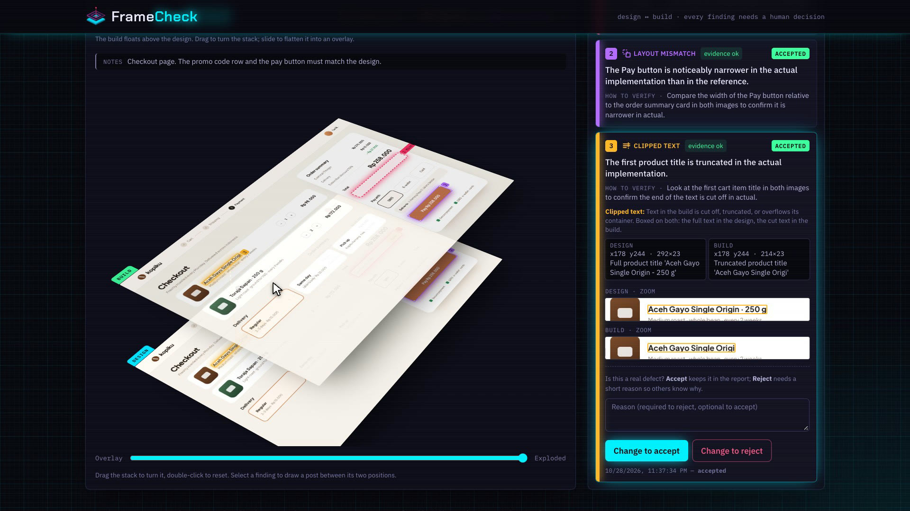
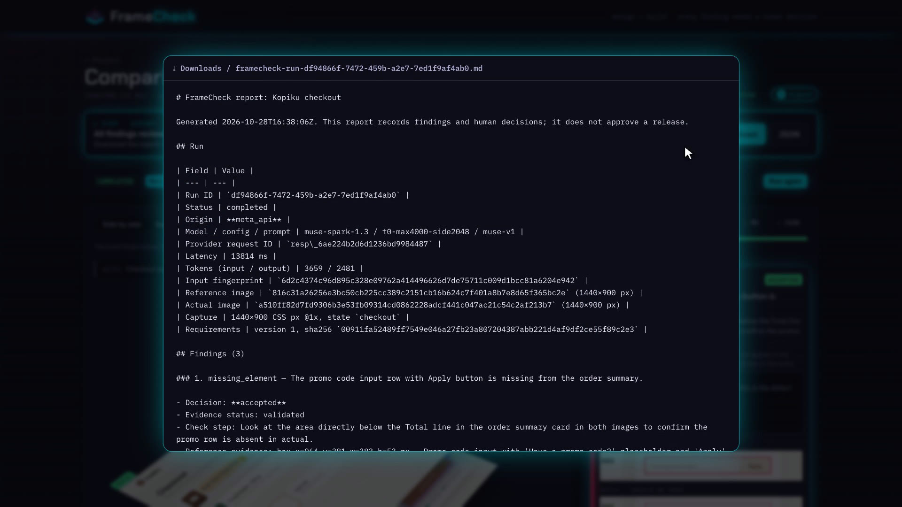

FrameCheck compares a design export with a screenshot of the build. One Muse Spark request returns findings in three categories: missing element, clipped text and layout mismatch. Each finding carries a summary, a check step, and a box on the design, the build, or both. The developer reviews every finding, accepting or rejecting it with a reason, and exports the reviewed run as Markdown for a pull request or JSON for tooling.
The problem Impact · 30%
Front-end developers check their work by flipping between a Figma export and a browser window. Small defects slip through: a button that never rendered, a headline cut off by overflow: hidden, a card that dropped thirty pixels. Pixel-diff tools flag every anti-aliasing and compression change and cannot say what went wrong, so reviewers stop reading them. On our holdout page, a pixel diff found 1 of 12 defects and raised 5 false alarms on a JPEG copy of an unchanged page.
Who benefits
Front-end developers catch visual regressions before opening a pull request.
Reviewers and QA get findings with evidence instead of a vague "looks off".
Designers check fidelity without walking through every screen by hand.
Small teams and freelancers without a dedicated QA person.
Why it can become a tool people use
Works with any screenshot pair: no SDK, no framework lock-in.
Fits the existing workflow: the Markdown export pastes straight into a PR.
Human in the loop by design: nothing counts until a person decides.
Honest about uncertainty: an empty result is not a sign-off, and mock or fixture output is never shown as AI output.
Where to find each judging criterion
Criterion (weight)
Evidence in this submission
Page
Impact (30%)
Problem, users and workflow fit; built from the author's own day-to-day front-end work
2
Use of Meta AI Tooling (25%)
Structured multi-image grounding with Muse Spark, a coordinate contract, evidence validation, guard rails
4
Technical Depth & Execution (20%)
Architecture, run lifecycle, tests, deterministic evaluation harness with a holdout set
5
Demo (25%)
2:32 video with a live Muse Spark run; live results table; run-it-yourself instructions
3, 6
FrameCheck · Submission brief2 / 7
FrameCheckProduct walkthrough
The product, in six frames Demo · 25%
All frames come from the demo recording of the running app, on an original checkout design ("Kopiku") with three injected defects. The run shown is a real Muse Spark request.

1 · UploadDesign and build dropped in; FrameCheck reads the image size and suggests the pixel ratio so both line up.

2 · AnalyseOne Muse Spark request. The run shows its origin, model, latency and tokens; three findings arrive with boxes.

3 · ReviewA finding zooms both images to the same window. A missing element is drawn as a dashed ghost where it should be.

4 · SwipeA divider wipes between design and build at the same position: changes jump out as it passes.

5 · Layers 3DThe build floats above the design; flatten it into a 50% overlay or turn the stack and follow a finding's post.

6 · ExportMarkdown report with origin, model, tokens, input fingerprint, evidence and every human decision.
FrameCheck · Submission brief3 / 7
FrameCheckUse of Meta AI tooling
How Muse Spark is used Tooling · 25%
FrameCheck asks Muse Spark to do what a careful reviewer does: look at two images, name what differs, and point at it on each image. Most of the work went into making that answer checkable.
Part
What FrameCheck does
Request
POST /v1/responses, model muse-spark-1.3, both images as data URLs in one message, temperature 0, store: false.
Structured output
Strict json_schema: findings[] with category, summary, check step and a box per image, plus inspected_both_images. Off-schema output fails the run (INVALID_OUTPUT); there is no free-text parsing.
Grounding on two images
The model answers on a 0–1000 grid of the image it saw. Large screenshots are area-averaged down to a maximum side; the crop and scale are stored with the run and boxes are mapped back to original pixels (floor for minimum, ceil for maximum).
Untrusted output
Each finding is checked against its category's evidence rules (missing: design box only; clipped and layout: both boxes). Rule breaks are kept but flagged "check evidence"; boxes are clamped and findings capped.
Prompt safety
The developer's notes go in a delimited block whose delimiter is escaped; they add context but cannot change the rules or schema.
Cost guard rails
Per-process request cap, input fingerprint with duplicate-run detection, idempotency keys, input/output tokens stored on every run, safe error codes that never echo the key or body.
Honest origins
Every run records meta_api, fixture or mock, and the UI and export show it.
Capabilities we did not expect
Pixel-accurate grounding across two images in one call: boxes overlap the injected regions at IoU 0.92–0.96.
Telling absence from truncation: a removed promo row is reported as missing with no build box; a cut title is reported as clipped with the full text on the design and the remaining text on the build.
Following context: told that grey boxes hide personal data and a clock ticks, it ignored both and reported only the real defects.
FrameCheck · Submission brief4 / 7
FrameCheckTechnical depth
Engineering Execution · 20%
Web app
React 19 · TypeScript · Vite · Tailwind 4. Evidence overlays, swipe, CSS 3D layers, review, export.
Uploads: real type sniffed from bytes, 10 MB and 8000 px limits, full decode.
Pairs must share viewport, pixel ratio and page state.
Runs: input fingerprint, idempotency keys, one active run per project (partial unique index), sequential worker, recovery of interrupted runs.
Reviews are append-only history; rejecting needs a reason.
Tests and evaluation
Go tests for domain rules, the application layer (in-memory repository), providers and the scorer; the Meta adapter is tested against a local fake server only.
Frontend unit tests for coordinate and review rules.
Fixtures rendered by headless Chrome; ground truth from the DOM; each capture checked for determinism and for changes staying inside the labelled component.
Separate holdout page (new layout, fonts, viewport, a JPEG control) scored only with a frozen prompt.
Craft details
Every 3D view, the logo, the intro and outro animations, the chapter cards and all music and sound effects are generated from code in the repository.
The demo recording is driven by a scripted browser with a visible, human-paced cursor; the model wait is sped up and labelled.
FrameCheck · Submission brief5 / 7
FrameCheckResults · Demo
Does it work? Demo · 25%
12 / 12
injected defects found across 4 live Muse Spark runs
0
false positives in those runs
11–14 s
per analysis, one request with two images
0.92–0.96
box IoU on missing and layout findings
Image pair
Run
Defects found
False pos.
Latency
Tokens in / out
Real web-app dashboard, personal data redacted (not published)
single run
3 / 3
0
13.0 s
5,225 / 1,745
"Kopiku" checkout (original design)
pre-check
3 / 3
0
11.3 s
3,650 / 2,632
"Kopiku" checkout
recording take 1
3 / 3
0
14.1 s
3,659 / 2,575
"Kopiku" checkout
recording take 2 (in the video)
3 / 3
0
13.8 s
3,659 / 2,481
Each pair has one missing element, one clipped text and one layout mismatch, injected on purpose. Four runs on two pairs show the pipeline works end to end; they are not a benchmark.
3D intro → landing page → 01 Upload & pair → 02 Analyse with Muse Spark (live request) → 03 Review every finding → 04 Compare in Swipe & 3D → 05 Export the report → 3D closing. Voice-over, burned-in captions and on-screen notes explain each step.
Run it yourself
docker compose --project-name framecheck up -d postgres · cd framecheck_BE && go run ./cmd/api · cd framecheck_FE && pnpm install && pnpm dev → open 127.0.0.1:5181 and press Try it with a sample. Without a Meta key the offline mock provider is used; set FRAMECHECK_PROVIDER=meta and a key in .env to use Muse Spark.
FrameCheck · Submission brief6 / 7
FrameCheckOriginality · Limits · Next
Originality and compliance
Built during the hackathon: planning notes on 22 October 2026; code written from 27 October, after the 26 October kickoff. The progress log in docs/PROGRESS.md records each step.
Original work: the demo pages "Lembar" and "Kopiku" and all test images are self-made; the logo, animations, music and sound effects are generated from code in the repository. No third-party designs are used.
Open source, licences followed: pgx, chromedp, cdproto (MIT); google/uuid (BSD-3-Clause); React, Vite, Tailwind CSS, Vitest (MIT); TypeScript (Apache-2.0); fonts under the SIL Open Font License; PostgreSQL licence. FrameCheck itself is MIT licensed.
Privacy: the only real-world screenshot was redacted with identical boxes before it was sent, and it is not published. The API key lives only in the server's .env, never in the browser, logs or repository.
Known limitations
Three categories only. Colour, font rendering and wording are not judged on their own; an empty result is not a sign-off.
Both images must be captured the same way; mismatched screenshots are not aligned or rescaled automatically.
Content that changes between captures (clocks, captchas, live data) appears as a difference unless the notes say to ignore it.
Accuracy on varied real-world pages still needs the full benchmark.
Next steps
Model
Run the dev and holdout benchmark with a frozen prompt and publish the numbers.
A second Muse Spark pass that re-checks each finding on a zoomed crop to cut false positives.
SAM 3 masks to tighten boxes to the element's exact outline.
Product
A CI action that captures pages and comments FrameCheck findings on pull requests.
Multiple viewports per page (mobile, tablet, desktop) in one comparison.
A Figma plugin that exports frames with their capture settings.
 FrameCheck
FrameCheck